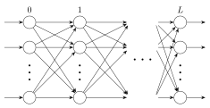
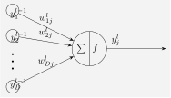
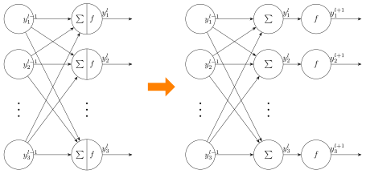

誤差逆伝播法の数式の説明なんて世の中にたくさんあると思うが、理解のために自分でもまとめる。
特に添字などのミスがあると思うので、見つけ次第修正する。
誤差逆伝播の計算 (1)
問題設定
入力を第 $0$ 層、出力を第 $L$ 層とする。ニューラルネットワークはよく次のようなグラフで描かれる。
円がノードを表す。ノードに入っていく矢印が入力、出ていく矢印が出力を表す。

第 $l$ 層 $j$ 番目のノードの出力を $y_j^l$ とおく (注意: この記事では $y_j^{l}$ の $l$ は添字を表すものとする。累乗ではない。これから現れる変数についても同様)。これはある関数 $f_l$ を用いて以下の式で表される。$f_l$ は活性化関数と呼ばれる。
ただし、$u_j^{l}$ は前の層の出力を用いて計算される線形和で、以下のように定義される。
このような、線形和を取って $f$ を適用するという流れは次のようなグラフで描かれる。

この $\sum | f$ のノードがたくさん集まって第 $l$ 層を形成している。
損失関数 $E$ は、重み$w_{ij}^{l}$ についての関数である。これは出力値 $y_i^{L}$ と教師データ $\tilde{y}_i$ との違いを測る尺度であるから、$y_i^{L}$ の関数でもある。
例えば、以下の二乗誤差は損失関数の一種である。
定義中に $w_{ij}^{l}$ が含まれていないじゃないか、と思うかもしれないが、$y_i^{L}$ の定義中に $w_{ij}^{L}$ が含まれている。さらにその中の $y_i^{L-1}$ 中に $w_{ij}^{L-1}$ が含まれている。以下同様にして $w_{ij}^l$ は $E$ の中に含まれている。
いま、$E$ を最小化するような $w_{ij}^{l}$ を求めたい。これには確率的勾配法が利用できるが、そのために偏微分 $\displaystyle \frac{\partial E}{\partial w_{ij}^{l}}$ を計算する必要がある。以降、これをどう計算するかという話を展開していく。
出力層
$l = L$ のときを考える。まず $E$ は $y_1^{L}, y_2^{L}, \ldots, $ についての関数だから、連鎖律より、
と変形できる。ところが、$y_{j'}^{L} = f_L(u_{j'}^{L})$ は $u_{j'}^{L}$ についての関数より、再び連鎖律から、
と書ける。ここで、$f_L'$ は $f_L$ の導関数を表し、$\delta_{j,j'}$ はクロネッカーのデルタを表す。
結局、式 $(1)$ の$\sum_{j'}$ の部分が消えて、
が得られる。このように $j' = j$ の項しか残らないのは、$w_{ij}^{L}$ が $E(y_1^L, y_2^L, \ldots )$ の引数のうち $y_j^{L}$ にしか関わってこないからなのだが、一応このことを丁寧に計算で示した。
今後の計算のために、以下の量を定義する。
これを用いると、
と表せる。
中間層
$l \neq L$ のときを考える。$E$ は $y_1^{L}, y_2^{L}, \ldots $ の関数であるが、その各々 $y_j^{L} = f_L\left( \sum_{i} w_{ij}^{L} y_i^{L-1} \right)$ は $y_1^{L-1}, y_2^{L-1}, \ldots $ の関数である。
従って、$E$ は $y_1^{L-1}, y_2^{L-1}, \ldots $ の関数でもある。以下同様にして、$E$ は $y_1^{l}, y_2^{l}, \ldots $ の関数であることが分かる。よって、連鎖率より、
と書ける。出力層のときとまったく同じ議論により、これは、
となる。ここで、$\delta_{j}^{l}$ は
であるから、これを計算するためには$\displaystyle \frac{\partial E}{\partial y_{j}^{l}}$ を計算する必要がある。 $E$ は $y_1^{l+1}, y_2^{l+2}, \ldots $ の関数でもあるから、連鎖律より、
が成り立つ。さらに $y_{k}^{l+1}$ は $u_{k}^{l+1}$ の関数であるから、連鎖律より、
となる。ここで、
であるから、式$(2)$は、
となる。以上より求めたかった $\delta_j^{l}$ は、
と書ける。すなわち、$\delta_{j}^{l}$ を計算するためには $\delta_{k}^{l+1}$ を計算しておけば良い。
ここまでのまとめ
さて、いままでの計算をまとめると、$1 \le l \le L$ について、
と表せる。ただし $\delta_{j}^{l}$ は、
で表される。
ベクトル表記にする
第 $l$ 層についての $\delta_j^{l}$ を並べたベクトルを $\bm{\delta^{l}}$ で表す。同様に、ベクトル $\bm{y}^{l}, \bm{u}^{l}$ を定義する。
前提として、$\bm{u}^{l}$、$\bm{y}^{l}$ は次のように計算できる。これはいわゆる順伝播である。
ただし、関数 $f$ とベクトル $\bm{x}$ に対し、 $f(\bm{x})$ は $\bm{x}$ の各成分に $f$ を適用したベクトルを表す。
最初に、$\bm{\delta}^{l}$ の計算式を導く。$l = L$ のとき、
とすればよい。
ただし、任意のベクトル$\bm{x}, \bm{y}$ について、$\bm{x} \ast \bm{y}$ は成分ごとの積をとったベクトルを表す。
$l \neq L$ のとき、$W^{l+1} = (w_{ij}^{l+1})_{ij}$ を $P \times Q$ 行列とする(注意: この記事では $W^{l}$ の $l$ は累乗ではなく添字を表すものとする)。
このとき、
$\frac{\partial E}{\partial w_{ij}^{l}}$ については、
と表せる。
まとめ
前提として、以下の順伝播の式で $\bm{y}^{l}$、$\bm{u}^{l}$ が計算できているものとする。
誤差逆伝播の式は次のように書ける。
誤差逆伝播の計算 (2)
前節では「$\delta_j^{l+1}$ を使って $\delta_j^{l}$ を求める」という流れを導出したが、
式変形を睨むと、「$\frac{\partial E}{\partial y_j^{l+1}}$ を使って $\frac{\partial E}{\partial y_j^{l}}$ を求める」という流れでも良いことが分かる。
それを確かめるために、$\delta_j^{l+1}$ という表記をやめ、式を見直してみる。
まず、$1 \le l \le L$ について、前節の議論により、
が成り立つ。$\frac{\partial E}{\partial y_j^{l}}$ をどう求めるかを考える。
$l = L$ の場合は、単に損失関数 $E$ の定義に従って計算すれば良い (どんな損失関数を選ぶかで形が違ってくる)。$l \neq L$ の場合、前節の中間層の計算を追ってみると、
と計算できる。すなわち、$y_k^{l+1}$ による偏微分を使って第 $y_{k}^{l}$ による偏微分が計算できることが分かる。式 $(4)$ には第 $l+1$ 層に関連する量しか含まれていないから、この計算は $l+1$ 層にて事前に行っておけばよい。もちろん、第 $l$ 層の立場からすれば、第 $l-1$ 層についての以下の事前計算を行うことになる。
まとめると、第 $l$ 層で行う処理は次の2つである。
- 式 $(3)$に従って $\frac{\partial E}{\partial w_{ij}^{l}}$ を計算する。
- 1つ前の層の計算のために、式 $(5)$ を使って $E$ の $y_{i}^{l-1}$ による偏微分を計算しておく。
最初からこちらの手法で解説している文献もある。
計算の分離
重み付き線形和を求めるだけの層、活性化関数を求めるだけの層に分ける。

前者は全結合層と呼ばれている。Affine Layer 、Dense Layer とも言われる。後者は活性化関数に応じて層の名前が付く。例えばシグモイド関数なら Sigmoid Layer と呼ばれ、ReLU関数なら ReLU Layer と呼ばれる。
kerasやChainer、PyToachなどのニューラルネットワークのライブラリでは、このように層を分けている。その理由はおそらく使いやすさ・分かり易さの観点からだと思われる。
後々計算すると分かるが、分けることによって式が綺麗にまとまる。また活性化関数の層を分けておけば、全結合層以外の層とも組み合わせられる。
以下では、それぞれの層について $\frac{\partial E}{\partial w_{ij}^{l}},\ \frac{\partial E}{\partial y_{j}^{l-1}}$ の計算方法を記す。
活性化関数を求める層
$y_i^{l-1}$ を入力、$y_i^{l} = f(y_i^{l-1}) \ (i = 1, 2, \ldots)$ を出力とする層を考える。
まず、$\frac{\partial E}{\partial w_{ij}^{l}}$ を計算する必要はない。なぜなら、重み $w_{ij}^{l}$ が存在しないからである。よって、$y_{i}^{l-1}$ による微分のみ計算する。
連鎖律より、
$y_i^{l}$ は $y_i^{l-1}$ のみの関数であることに注意して、
と計算される。
ベクトルで表記すると、
全結合層
$y_i^{l-1}$ を入力、$y_i^{l} = \sum_{j}w_{ij} y_j^{l-1} \ (i = 1, 2, \ldots)$ を出力とする層を考える。
面倒なので計算を端折る。要するにこの線形和は、以前の議論で導いた2つの式 $(3)$、$(5)$
において、活性化関数が恒等関数 $f(x) = x$ となるものである。よって、
が得られる。
ベクトルで表記すると、
ミニバッチ学習
いままで確率的勾配法で話を進めてきたが、ミニバッチ勾配法の場合はどのようになるのだろうか。
計算のためには、今までの表記を少し改め、損失関数をミニバッチ用に変える必要がある。
今まで出力値を $y_i^{l}$ と表していたが、これを $n$ 番目の入力データに対する出力値 $y_{ni}^{l}$ に書き直す。
まず、ミニバッチとする訓練データの個数を $N$ とする。その入力を $\bm{y}_1^{0}, \bm{y}_2^{0}, \ldots, \bm{y}_N^{0}$ とする。
各ノードに対する出力値は $\bm{y}_1^{l}, \bm{y}_2^{l}, \ldots, \bm{y}_N^{l}$ と書ける。
ここで、第 $l$ 層のノードの個数を $D_l$ とし、
とした。
また、
と書くことにする。
$n$ 番目の入力データに対する損失関数を$E_n$とする。例えば二乗誤差なら、
となる。
$N$ 個の訓練データに対する損失関数を、各々のデータの損失関数の平均で表す。
さて $w_{ij}^{l}$ についての偏微分をどう計算するかだが、これは偏微分の線形性から、
が成り立つことに注目すれば良い。$E_n$ の計算は今までの議論と何ら変わりない。
あとはそれぞれの層について、順伝播・逆伝播がどう表現できるのかについて考える。
誤差逆伝播の計算 (1) の場合
$n$ 番目のデータに対する第 $l$ 層の線形和を $\bm{u}_n^{l}$ とおく。$Y^{l}$ の定義とほぼ同様にして、
を定義する。同様に、
を定義する。
順伝播
ただし、関数 $f$ と行列 $A$ に対し、 $f(A)$ は $A$ の各成分に $f$ を適用した行列を表す。
逆伝播
式 $(6)$ が $W^{l} = (w_{ij}^{l})_{ij}$ の各成分について成り立つから、
と変形できる。これより、
$\Delta^{l}$ の計算については、$l = L$ のとき、
ただし、任意の行列$A, B$ について、$A \ast B$ は成分ごとの積をとった行列を表す。
$l \neq L$ のとき、
と計算できる。このように、ベクトルだった部分がそのまま行列になったかのような形となる。実際、$N = 1$ としたらベクトルの表現に戻ることが分かるだろう。
誤差逆伝播の計算 (2) の場合
活性化関数の層
順伝播については、
で計算すれば良い。
逆伝播については次のように式が変形できる。
ベクトルが行列にすり替わっただけで、式の形はほとんど変わらない。
全結合層
順伝播については、
で計算できる。
逆伝播の式を導出する。$W^{l}$ については、
となる。$Y^{l-1}$ については、
どちらも、ベクトルで表現した場合とあまり変わらないことが分かる。
まとめと感想
自分でまとめてみると、難しい計算はしていないことが実感できた。
出てくる文字の数が多かったり、添字がややこしかったり、どの変数について連鎖律を使うのかという点がやや技巧的だったりはした。
ここまで式をまとめられれば、プログラムの実装ができそう。それは別の記事でまとめたい。
誤差逆伝播法の導出を通して、ニューラルネットワークが少し身近に感じられるようになった。
ただし、誤差逆伝播法は必要だが、これ自体がニューラルネットワークの本質であると勘違いしないようにしなければならないだろう (あくまで計算テクニックの1つ、という認識を持っている)。
本当に考えなければならないのは、どんなネットワークを作るか、どんな入力形式にするか、だと思う。
とはいえ自分はまだ入門者なので、確かなことは言えないが…。